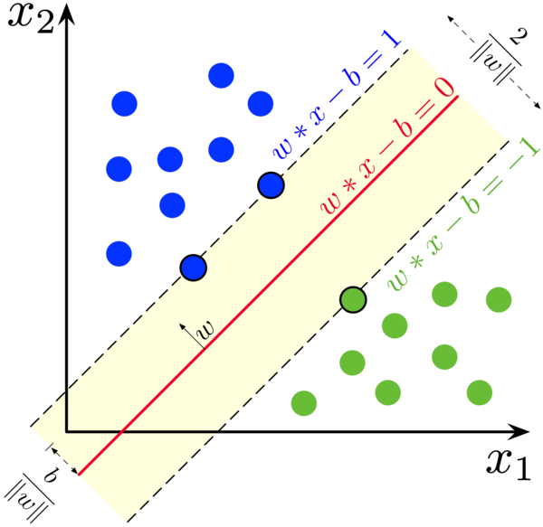

Support vector machine
Reference
Objective
We want to find the maximum-margin hyperplane that divides the points having ci=1 from those having ci=−1.

Solution
Notation
use parameters w, b, and write our classifier as:
hw,b(x)=g(wTx+b)
Functional and geometric margins
define the functional margin of (w,b) with respect to the training example:
γ^(i)=y(i)(wTx+b)
if y(i)(wTx+b)>0, then our prediction on this example is correct.
γ^: smallest of the functional margins of the individual training examples.
γ^=i=1,…,mminγ^(i)
Point A: x(i)
Point B: x(i)−γ(i)⋅w/∥w∥
Point B lies on the decision boundary, and all points x on the decision boundary satisfy the equation:
wT(x(i)−γ(i)∥w∥w)+b=0
More generally:
γ(i)=y(i)((∥w∥w)Tx(i)+∥w∥b)
The optimal margin classifier
γ,w,bmax s.t. γy(i)(wTx(i)+b)≥γ,i=1,…,m∥w∥=1
let’s try transforming the problem into a nicer one:
maxγ^,w,bs.t.∥w∥γ^y(i)(wTx(i)+b)≥γ,i=1,...,m
We will introduce the scaling constraint that the
functional margin of w, b with respect to the training set must be 1.
γ^=1
We now have the following optimization problem. The problem into a form that can be efficiently
solved.
minγ,w,bs.t.21∥w∥2y(i)(wTx(i)+b)≥1,i=1,...,m
Lagrange duality
Construct the Lagrangian for our optimization problem we have:
L(w,b,α)=21∥w∥2−i=1∑mαi[y(i)(wTx(i)+b)−1]
derivative with respect to w:
∇WL(w,b,α)=w−i=1∑mαiy(i)x(i)=0
w=i=1∑mαiy(i)x(i)
derivative with respect to b:
∂b∂L(w,b,α)=i=1∑mαiy(i)=0
If we take the definition of w in Equation and plug that back into the Lagrangian, and simplify, we get:
L(w,b,α)=i=1∑mαi−21i,j=1∑my(i)y(j)αiαj(x(i))Tx(j)−bi=1∑mαiy(i)
But from derivative with respect to b, so we obtain:
L(w,b,α)=i=1∑mαi−21i,j=1∑my(i)y(j)αiαj(x(i))Tx(j)
Putting this together with the constraints, we obtain the following dual optimization problem:
maxαs.t.W(α)=i=1∑mαi−21i,j=1∑my(i)y(j)αiαj⟨x(i)x(j)⟩αi≥0,i=1,...,mi=1∑mαiy(i)=0
Solves quadratic program in python
cvxopt
minimize:
(1/2)∗x′∗P∗x+q′∗x
subject to:
G∗x<=h
A∗x=b
P & q
i=1∑mαi−21i,j=1∑my(i)y(j)αiαj⟨x(i),x(j)⟩
(1/2)∗x′∗P∗x+q′∗x
P = cvxopt.matrix(np.outer(y, y) * kernel_matrix, tc='d')
q = cvxopt.matrix(np.ones(n_samples) * -1)
G & h
G∗x<=h
αi≥0,i=1,…,m
G = cvxopt.matrix(np.identity(n_samples) * -1)
h = cvxopt.matrix(np.zeros(n_samples))
A & b
A∗x=b
i=1∑mαiy(i)=0
A = cvxopt.matrix(y, (1, n_samples), tc='d')
b = cvxopt.matrix(0, tc='d')